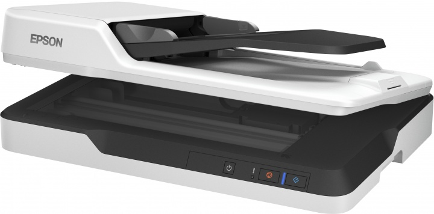
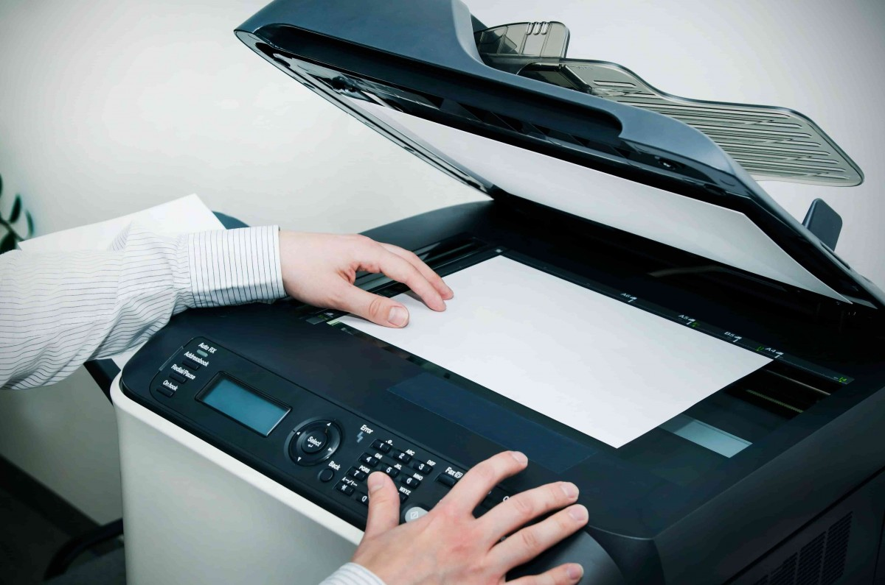

Сканеры - это устройства, которые преобразуют физические документы или изображения в цифровую форму. Они могут испытывать различные проблемы и неисправности.

Вот некоторые из наиболее распространенных проблем со сканерами и способы их решения:
сканер не включается:
убедитесь, что сканер подключен к сети и включен;
проверьте кабель питания и USB-кабель на предмет повреждений;
если сканер все еще не включается, возможно, проблема связана с внутренними компонентами. В этом случае рекомендуется обратиться к специалисту по ремонту сканеров.
сканер не сканирует:
убедитесь, что сканер правильно подключен к компьютеру и включен;
проверьте драйвер сканера на компьютере. Возможно, его нужно обновить или переустановить;
если ничего не помогает, возможно, проблема связана с механизмом сканера. В этом случае рекомендуется обратиться к специалисту по ремонту сканеров.
сканер сканирует с низким качеством:

убедитесь, что сканируемый документ или изображение расположены ровно на стекле сканера;
проверьте настройки сканирования на компьютере. Возможно, они установлены неправильно;
если ничего не помогает, возможно, проблема связана с механизмом сканера или его оптикой. В этом случае рекомендуется обратиться к специалисту по ремонту сканеров.
сканер издает странные звуки:
убедитесь, что сканируемый документ или изображение расположены ровно на стекле сканера;
проверьте, нет ли замятия бумаги или других препятствий внутри сканера;
если ничего не помогает, возможно, проблема связана с механизмом сканера. В этом случае рекомендуется обратиться к специалисту по ремонту сканеров.